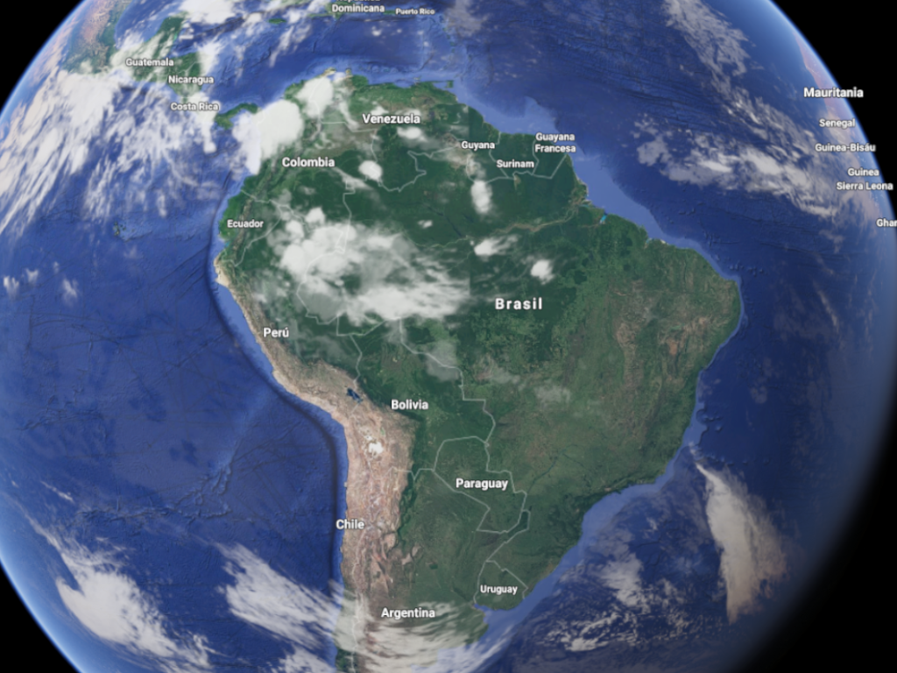
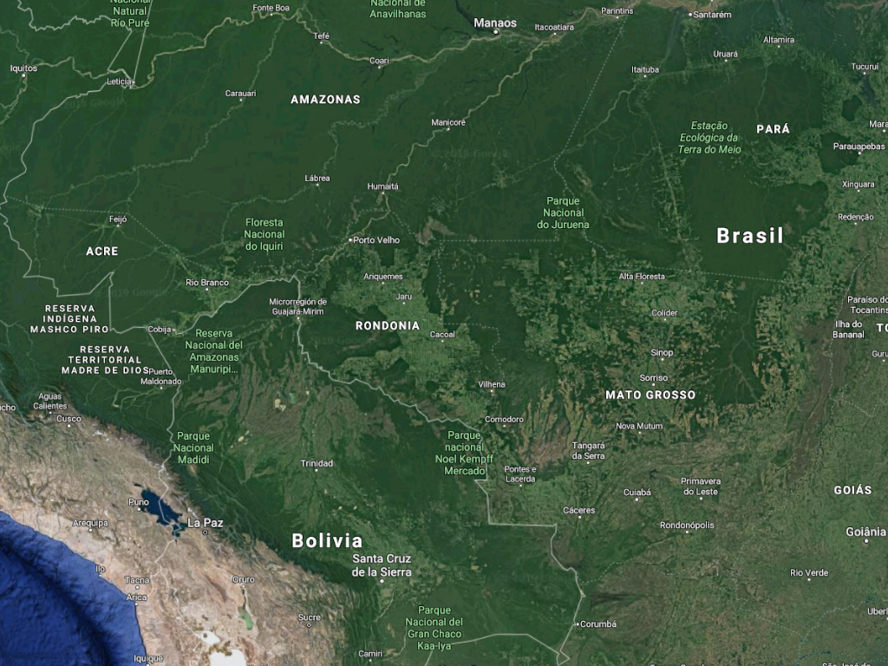
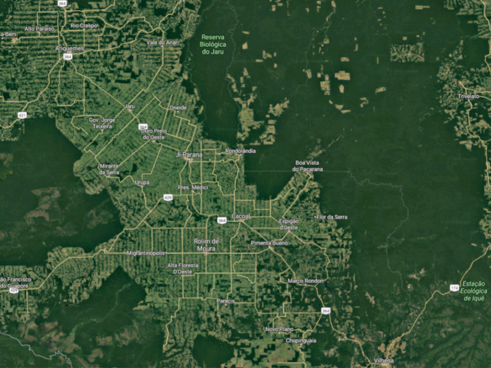
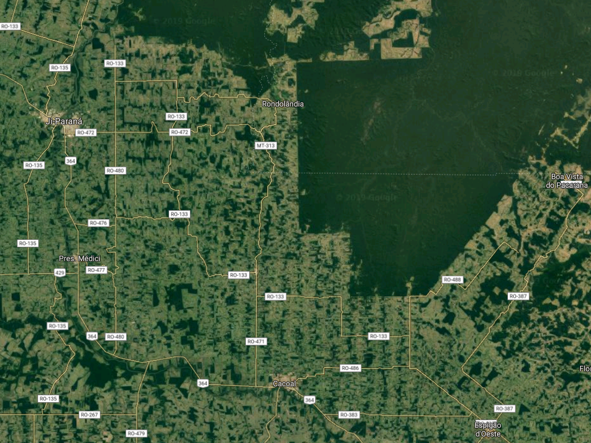
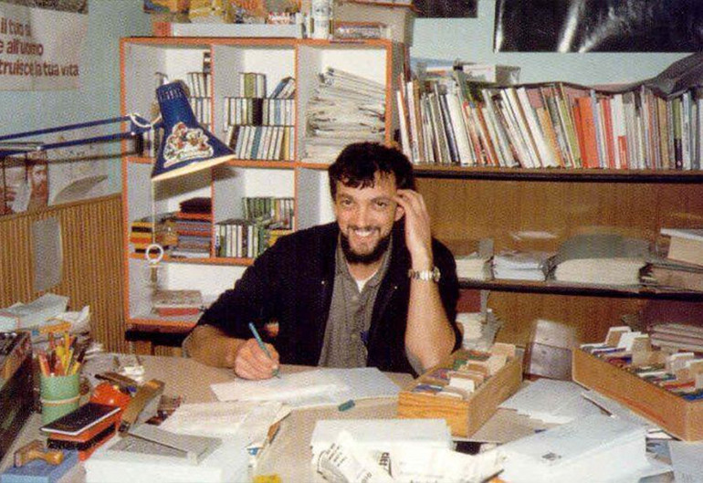

Cacoal è una città nello stato della Rondonia di circa 90.000 abitanti. Il governo federale aveva avviato negli anni 70 un processo di colonizzazione su larga scala in quella regione. La gente veniva in migliaia di angoli del paese, portando le proprie cose e cercando di lasciarsi alle spalle le sofferenze.
I lotti preparati dal governo non erano sufficienti per così tante famiglie che arrivavano. La maggior parte di loro finirono per lavorare sulla terra di altri a condizione che cedessero parte della produzione al proprietario del terreno.
I conflitti fondiari sono stati, e lo sono tuttora, risolti con l'assasinato. Uccidere persone, per alcuni, è stata una professione. Si è creato un clima di alta criminalità.